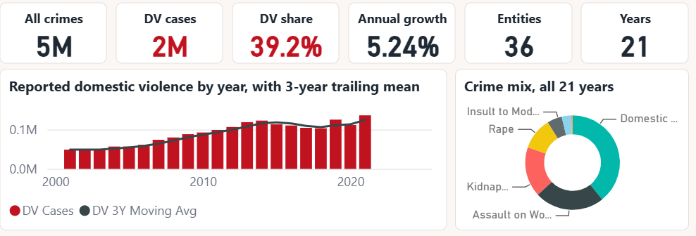

The five pages
Each page exists to answer one question. If a page cannot be summarised in a single question, it is doing too much.
1
Executive Overview
How big is this, and is it getting worse?

Screenshot pending — the page is described below.'">- Six KPI cards. Red is reserved for the two focus-crime figures so the eye lands there — everything else is warm neutral.
- Reported cases by year with a 3-year trailing mean; the 2020 dip and 2021 rebound are visible without annotation.
- A concentration card that rewrites itself as the year slicer moves.
2
Crime Type Trends
Is domestic violence growing faster than everything else? No — kidnapping (8.9%/yr) and trafficking (11.9%/yr) both outpace it.

- All seven heads indexed to 100 in the first visible year — rebasing is what makes series of wildly different magnitude legible on one axis.
- The statutory table carries IPC sections and a comparability flag: three of the seven heads have documented breaks and must not be trended across them.
- Dowry deaths are flat — 6,738 to 6,753 over 21 years. Deaths are the hardest category to under-report, so that flatness argues much of the growth elsewhere is reporting propensity, not incidence.
3
State Deep Dive
Where is it worst — and does that depend on how you ask?

- The volume-versus-intensity scatter is the page's whole argument. West Bengal leads on volume (302,143 cases) but ranks 6th on intensity; Assam has the highest 2021 rate at 84.8 per lakh women.
- The table sorts by the gap between the two rankings, so the states that volume-only league tables miss surface first.
- Deliberately no filled map — a choropleth of India lets the large low-intensity states dominate and mis-geocodes the small union territories, which are exactly the entities this page exists to surface.
4
ABC & Priority
If you could only fund eight programmes, which eight?

- 8 of 36 entities carry 72.9% of all recorded domestic violence — the most actionable number in the project.
- ABC bands by volume; risk zones band by intensity at the quartiles of the 2021 distribution. They are meant to disagree, and the off-diagonal cells are the finding.
- The classification recomputes inside the year slicer, so the A-list for 2001–2010 is not the A-list for 2011–2021.
5
Data Quality
Why can you trust these numbers?

- Most portfolio dashboards hide this page. This one leads with it.
- Three kinds of zero are separated and counted: an entity that did not exist yet, a measure missing from the export, and a genuine zero. Conflating them is how a dashboard becomes confidently wrong.
- The DV-share measure returns blank for 2011 rather than the ~55% it would otherwise print off an incomplete denominator. A dashboard should be silent where the data is unsound rather than plausible.